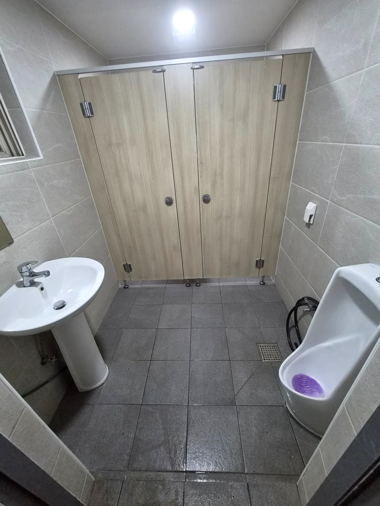
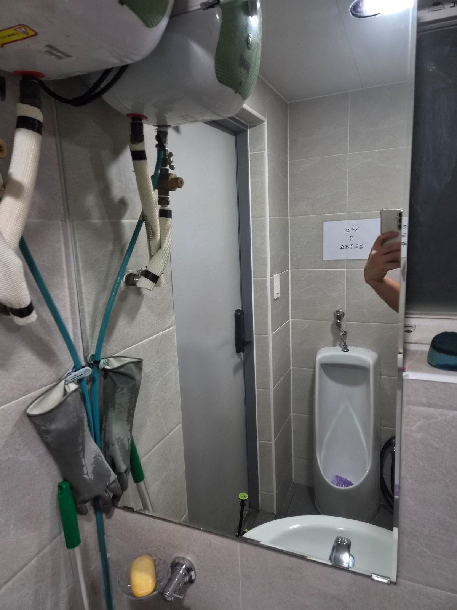
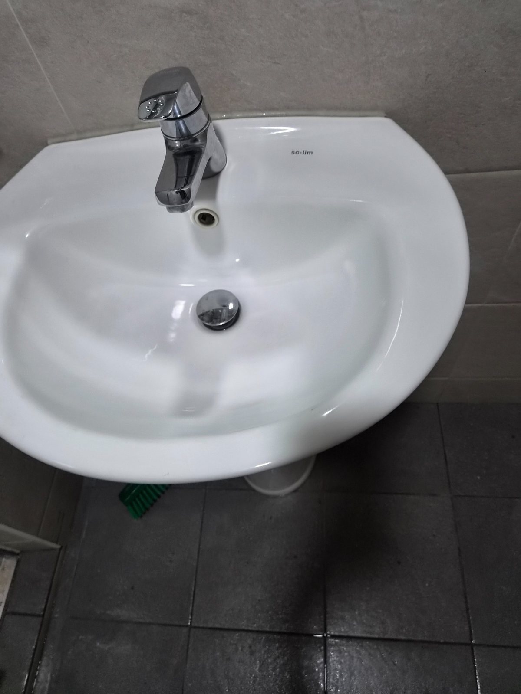
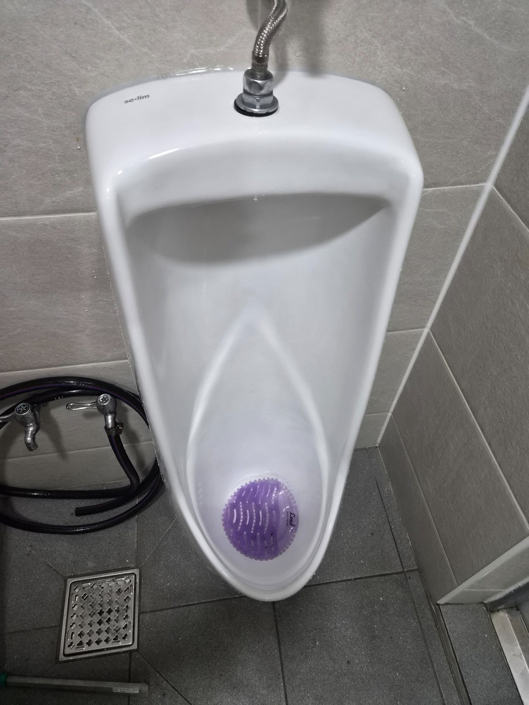
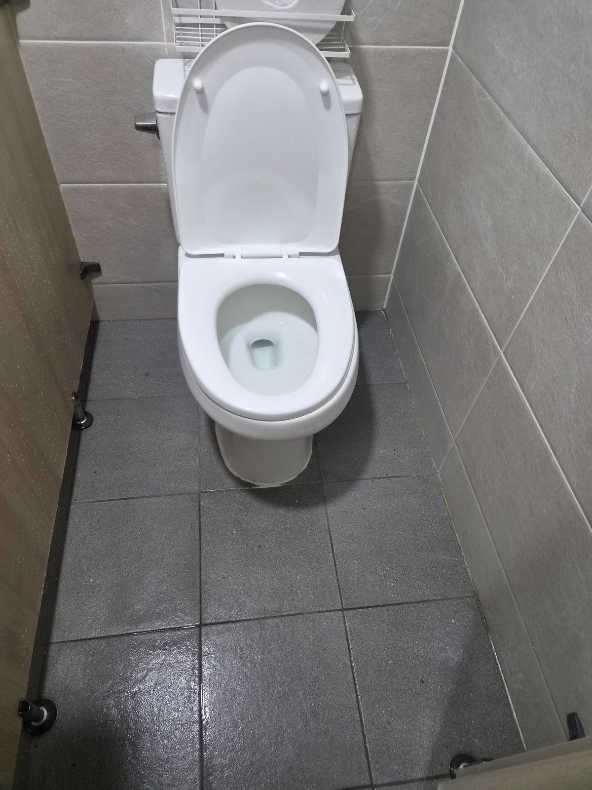
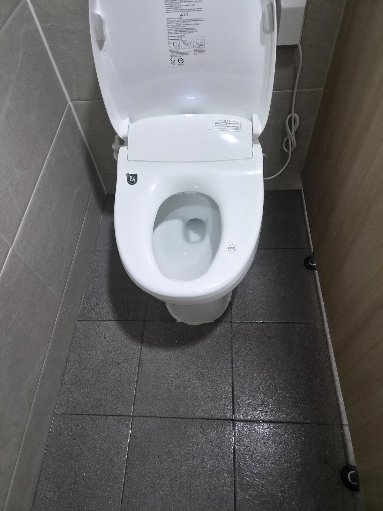

위생기기와 바닥을 함께 관리
소변기와 세면대는 사용 빈도가 높아 물때와 생활오염이 빠르게 쌓입니다. 위생기기 표면뿐 아니라 주변 바닥과 거울까지 함께 확인해 전체적인 청결도를 유지하도록 관리합니다.

김해 공단권 실제 화장실 작업사진을 바탕으로 상동 공장·사업장 화장실 관리 포인트를 정리한 퍼펙트케어 작업사례 기반 안내입니다.
소변기와 세면대는 사용 빈도가 높아 물때와 생활오염이 빠르게 쌓입니다. 위생기기 표면뿐 아니라 주변 바닥과 거울까지 함께 확인해 전체적인 청결도를 유지하도록 관리합니다.

화장실 바닥은 물기와 작업화 오염이 반복적으로 들어오는 공간입니다. 칸막이 아래, 변기 주변, 모서리와 배수구 주변까지 함께 확인하는 것이 중요합니다.





김해 상동 공단권 사업장은 화장실만 별도로 관리하거나 사무실, 계단, 복도, 공용부와 함께 묶어 정기청소 상담이 가능합니다.